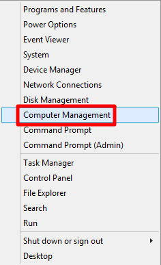
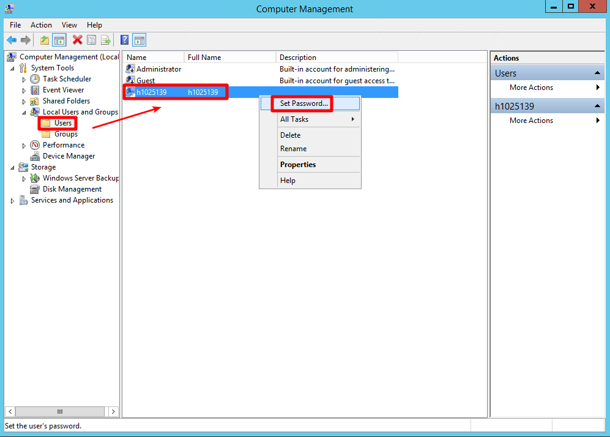
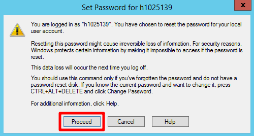
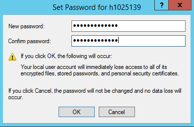
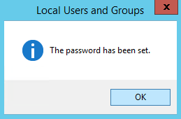

windows更改遠端密碼 發表於 2018-06-22 更新於 2020-07-30 分類於 windows Disqus： 更改遠端登入密碼 進入 VM 後，左下角開始點擊右鍵點選 Computer Management ( 中文名稱是電腦管理 ) 從 Local Users and Groups 項目中找到 Users，接者再剛開始建立的使用者，點選滑鼠右鍵選擇 Set Password 接者點選 Proceed 輸入兩次想更改的登入密碼並按下 OK，之後就可以用自訂的密碼來登入 VM ( 密碼沒辦法設定太簡單，最少需要配合大小寫加數字 ) 最後點下 OK 就設定成功了！